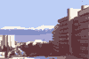

On January 16, 1999 Michael Kay (shodan), instructor with the Kokoro Budokai found himself bound for Slovakia as chief therapist for the Canadian team. Michael is a Physiotherapist and the event was the Winter World University Games. The Games were held in the Poprad-Tatry region of Slovakia.
The games are commonly called the Winter Universiade and the organization of this event is one of the main tasks of FISU (Federation Internationale du Sport Universitaire).
The Winter Universiade consists of 6 compulsory sports and 1-2 optional sports chosen by the host country.

The Universiade is open to all university student athletes; the event attracts entrants from all over the world.
Michael's first job was to assist the advance team in bringing the equipment (tape,TNS, IFCs, ultrasound, tables) everything needed to run a small clinic, to Slovakia.
The near 24-hour trip also allowed for discussion, planning and organization of strategies to prepare the site.
The two days lead-time (before athletes arrived) allowed for preparation of the space, records and testing of equipment. There were several interesting unexpected issues, for example, Slovakians do not use ice cubes. Consequently, finding a reliable supply of ice for treating acute injuries in the clinic was very difficult. We were eventually able to freeze our own supply and use snow (Unexpected mild temperatures even made this difficult).
| |
The physiotherapists worked with the physician to plan coverage. The primary objective was to ensure an emergency action plan was in place for high rise venues. A secondary objective was to manage any injuries or problems as they arose at each competition site.
Consequently, medical staff traveled with athletes to speed skating, alpine skiing, snowboarding and made themselves available as schedules permitted to cross country skiing and biathlon.
Following competition and practices physiotherapists and the physician established clinic hours so that sprains and strains could be assessed and treated.
We had an opportunity to see part of the country and meet some terrific Slovakian folks. Our Slovakian hosts made the Canadian team welcome and extended themselves in making the event successful.
As physiotherapists, it was a unique experience in mobile clinic sports injury management.
"For local folks, I have some slides available so if there were an interest, I would be pleased to describe the trip and the events in more detail."Michael Kay
|
{kind=link}
{kind=link}
{kind=link}
{kind=link}
{kind=link}
{kind=link}
{kind=link}
{kind=link}
{kind=link}